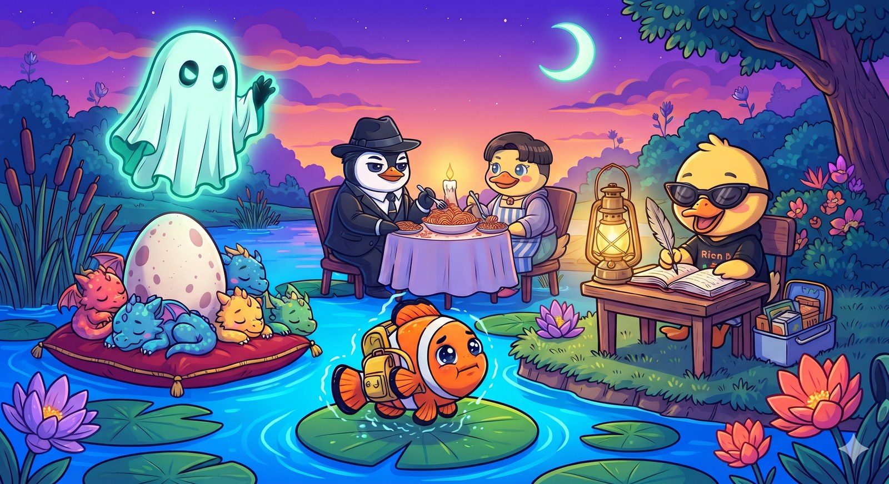

Orion packed her knapsack and waddled two ponds away to the peaceful St. Lilypad Academy, happily writing storybooks by the warm glow of a brass lantern. Papa Mo had packed her lunchbox with extra algae wafers, secretly very proud of her scholastic excellence.

Back home, twilight painted the sky in deep purples and oranges. At the dock, Papa Do and Mama Duck enjoyed seaweed spaghetti, looking like pond royalty. Near the reeds, all seven toddler dragons were sound asleep in a giant snoring puppy-pile around MiniGracie’s unhatched egg, which still had its "DO NOT DISTURB" sign firmly in place.
Out on a lonely lily pad, shivering inside his yellow backpack, was Papa Mo. Suddenly, Ghost Nobu floated down, glowing with eerie mint-green spectral light. She leaned close to Papa Mo’s fin and whispered with a spooky, alien giggle: "Enjoy the calm, Papa Mo... because October is here... and Halloween is going to be your worst nightmare!"
To be continued in Book Four: The Halloween Haunting! 🎃👻